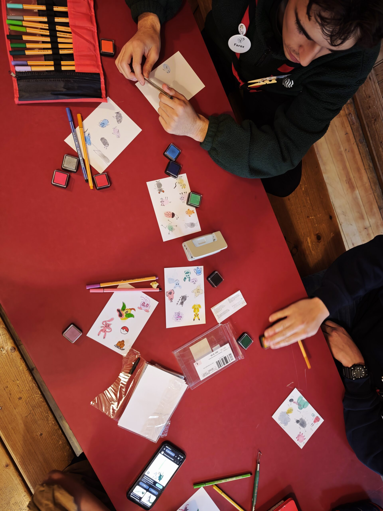

80 Teilnehmer
15 Leiter
50 APV

Das Leiterteam besteht aus engagierten Jugendlichen welche in diversen Bereichen des Lebens stehen. In unserem Leiterteam erlernst du schrittweise wie man Verantwortung für sich selbst oder gar für eine ganz Gruppe übernimmt. Wir organisieren die Aktivitäten am Samstagnachmittag sowie die Lager die jedes Jahr stattfinden. Jedes Mitglied des Leiterteams besucht die Kurse von Jugend und Sport (J+S), welche dafür sorgen, dass die Sicherheit und das Vorankommen für jeden Teilnehmenden an vorderste Stelle steht. Das Amt als Pfadileiter ist ehrenamtlich und zeitintensiv. Es ermöglicht jedoch Erfahrungen die man in diesem Alter kaum wo anders sammeln könnte.
Mehr erfahrenDie Mitglieder des Abteilungskomitee’s unterstützen hauptsächlich die Abteilungsleitung oder Leiter bei organisatorischen Fragen, Behördenkontakten usw. Wir verwalten die Finanzen, schauen zum Pfadiheim, helfen mit bei ausserordentlichen Anlässen. Kurz, wir unterstützen die Pfadi wo immer es nötig ist. Wir mischen uns jedoch nicht in das Pfadileben ein. Die Übungen und Lager werden von den LeiterInnen selbständig organisiert und durchgeführt. Die Pfadi ist ein Verein und die HV wird ebenfalls von uns einberufen.
Mehr erfahrenDer APV (Alt-Pfader-Verein), bildet jene Gruppe von ehemaligen Pfadis, welche keine aktive Rolle mehr in der Abteilung übernehmen und auch nicht am Abteilungskomitee angehören. Der APV dient den aktiven Leitern als Informationsquelle, bei Fragen wie man es früher gemacht hat, oder wie es früher so war. Im APV selbst gibt es keine Aktivitäten oder jährlichen Veranstaltungen. Sie bilden zusammen eine grosse Gruppe von Ehemaligen, die die Pfadiabteilung, mit Wissen, Finanziellen Mitteln oder ähnlichem so gut wie möglich unterstützt.
Mehr erfahrenUnsere Abteilung ist in vier Altersstufen unterteilt. Von 5-7 Jahre gibt es die Biberstufe. Die Wolfsstufe bilden die 7-10 jährigen. Gefolgt von der Pfadistufe, diese decken die Teenager von 10-15 Jahre ab. Zum Schluss gibt es noch die Piostufe, von 15-17 Jahre. Als letzte Stufe kommt nur noch die Roverstufe, was dann jedoch allgemein als Leiter bekannt ist.
Mehr erfahren